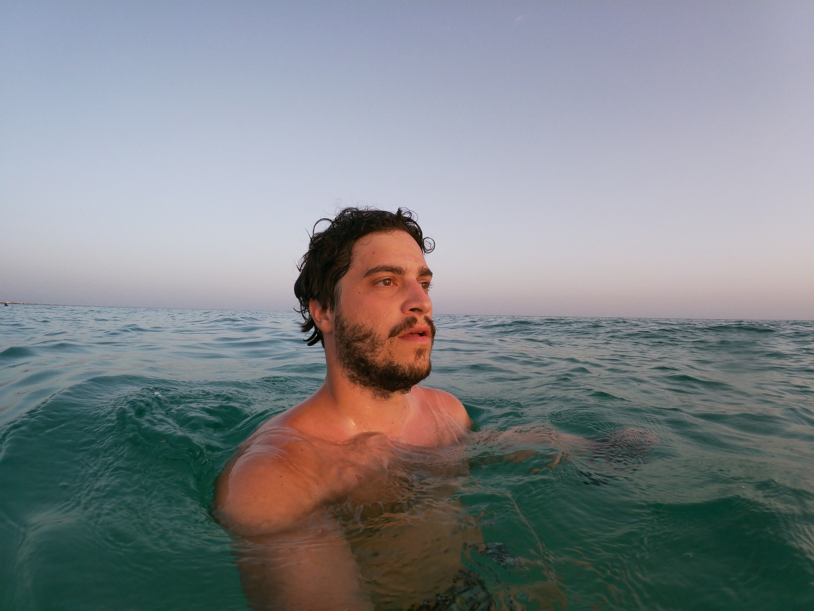
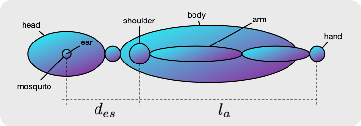
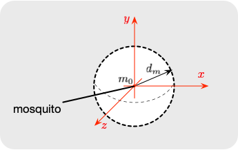

Guglielmo Camporese
Ph.D. Student in Brain, Mind and Computer Science at UniPD, Italy.
guglielmo.camporese [at] phd.unipd.it

Computing the Probability of Catching a Mosquito by Hands
Let's consider that you are resting in bed trying to falling asleep, and suddenly a mosquito comes in to play. What is the chance that you are going to catch the mosquito with your hands? Let's trying to answer this question by modeling this situation!

The involved variables are:
- the velocity of the mosquito $v_m$,
- the velocity of the arm $v_a$,
- the lenght of your arm $l_a$,
- the distance between your ear and its relative shoulder $d_{es}$.

Considering the max speed of the mosquito $v_m$ traveled in a straight line, the radius of the half-sphere $H\text{-}S$ can be computed as follows:
$$d_m = v_m \cdot \nabla t \ [m]$$
where the interval $\nabla t$ is the amount of time required for the arm to reach the ear (assuming a linear trajectory of the hand):
$$\nabla t = \frac{d_{es} + l_a}{v_a} \ [s].$$
Assuming a uniform spatial distribution of the mosquito in the sphere region, the probability $P_{catch}$ of catching it in a region ball of radius $h$ (this region coincides with your closed hand once you try to catch the mosquito) is:
$$
\begin{split}
P_{catch} &= \int_{H\text{-}S(h)} \frac{1}{Volume(H\text{-}S)} \cdot dx dy dz \\
&= \int_0^h \int_0^\pi \int_0^\pi \frac{2}{\frac{4}{3}\pi d_m^3} r^2 sin\phi \ d\theta \ d\phi \ dr \\
&= \left( \frac{v_a}{v_m} \frac{h}{d_{es} + l_a} \right)^3
\end{split}$$
Now it's time to get some numbers. Searching online I found that:
- the velocity of an average mosquito is $v_m = 0.56 \pm 0.1 \left[ \frac{m}{s} \right]$,
- [1] the velocity of a young man arm is $v_a = 2.5 \left[ \frac{m}{s} \right]$,
- the average length of an arm is $l_a = 0.6 \ [m]$
- the distance between the ear and the shoulder is $d_{es} = 0.2 \ [m]$,
- the radius of a closed hand is $h = 0.04 \ [m]$.
$$
P_{catch} = \left( \frac{2.5}{0.56} \frac{0.04}{0.6 + 0.2} \right)^3 \approx 1.11\%$$
$\Rightarrow$ The mosquito will probably fly away :)